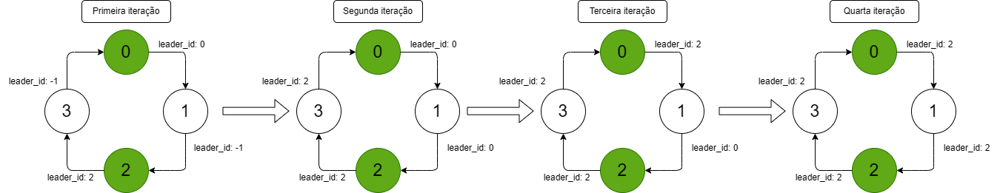
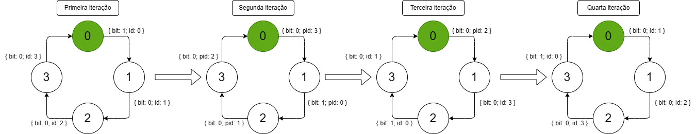

Relatório dos Algoritmos Implementados
Eduardo Faria Kruger GRR20232329 e Pedro Folloni Pesserl GRR20220072
Bacharelado em Ciência da Computação
Departamento de Informática - UFPR
Prof. Elias P. Duarte Jr.
Repositório do trabalho: https://github.com/pedropesserl/sisdis
Este relatório descreve a implementação dos algoritmos de eleição de líder Chang-Roberts e Randomized Leader Election.
O objetivo deste trabalho é implementar algoritmos de eleição de líder utilizando a biblioteca SMPL. Para todos os efeitos consideramos o salto de tempo do SMPL como 1 unidade, então eventos acontecem na unidade 1, depois na unidade 2, etc... Isso só não acontece nos envios de mensagem, que demoram 0.1 unidades de tempo para chegarem Estamos também trabalhando no modelo de falhas Crash, uma vez que o processo falha ele não volta mais. Além disso estamos trabalhando com o modelo de tempo síncrono, pois temos total clareza sobre o tempo de execução de uma ação usando o SMPL.
Aqui seguem os arquivos de código e log para cada uma das 5 tarefas (0 a 4) do trabalho 0. Esses arquivos estão organizados da seguinte forma:
t1
├── chang-roberts
│ ├── code
│ │ ├── chang-roberts.c
│ │ ├── makefile
│ │ ├── rand.c
│ │ ├── smpl.c
│ │ └── smpl.h
│ └── logs
│ ├── teste1.log.txt
│ ├── teste2.log.txt
│ ├── teste3.log.txt
│ └── teste4.log.txt
└── randomized-leader-election
├── code
│ ├── makefile
│ ├── rand.c
│ ├── randomized_leader_election.c
│ ├── smpl.c
│ └── smpl.h
└── logs
Cada processo possui:
leader_idmsg e am_i_candidateCada processo guarda quem ele acredita que é o líder, e a cada T quantidades de tempo ele manda uma mensagem para o processo seguinte no anel anunciando qual processo ele acredita que é o líder e se ele também é um candidato. Caso ele receba uma mensagem de outro processo e o ID recebido for maior que o ID do processo que ele acredita que é o líder, então ele passa a acreditar que o ID recebido é o ID do processo líder O Algoritmo acaba quando um processo X anuncia que é o líder para o processo (X+1) mod N, que percorre todo anel até chegar no processo (X-1) mod N Quando ele recebe o próprio ID do processo (X-1) mod N então todos acreditam que ele é o líder e o algoritmo acaba. Abaixo segue a imagem com a descrição de como funciona o algoritmo

msg e am_i_candidate. Quando um processo a testa um processo b correto
ele escreve nessas variáveis msg am_i_candidate do processo b e agenda um evento do tipo RECEIVE para o processo b 0.1 unidades de tempo depois
b por sua vez, quando trata o evento RECEIVE apenas lê esse buffer e processa os valores.
Por que criamos a variável pid além da variável id? Pois o identificador do SMPL não é necessariamente igual ao índice do processo
Durante o desenvolvimento tivemos alguns problemas de vários processos sendo eleitos. Isso acontecia pois o processo 0 poderia ter o id do SMPL 2 por exemplo. Então
apenas para manter uma consistência criamos essa variável
Para contarmos as mensagens trocadas temos uma variável global que é atualizada em todo evento RECEIVE tratado.
typedef struct {
int id; // identificador de facility do SMPL
int pid; // processId diferente do identificador do SMPL
bool bit; // bit sorteado nessa rodada
int num_candidates; // quantidade de processos que se candidataram nessa rodada
int id_ult_candidato; // id do ultimo processo candidato recebido
Mensagem msg; // buffer da mensagem recebida
int num_msgs_esperadas; // quantidade de mensagens que espera receber
int num_msgs_recebidas; // quantidade de mensagens que recebeu nessa rodada
bool *tested; // processos que testou nessa rodada
State *states; // crenca do processo a respeito dos estados dos demais
} Processo;
cd t1/chang-roberts/code make ./lider NUMERO_DE_PROCESSOS
O algoritmo funciona em rodadas. Na primeira rodada y < N processos sorteiam o bit um e a cada rodada menos e menos processos permanecem com o bit 1 até sobrar um único processo: o líder
Em cada rodada, os processos candidatos sorteiam um valor aleatório para um bit.
msg_to_send em cada processo. Essa variável tem a seguinte utilidade:
se um processo é candidato (bit 1) ele manda as suas informações para frente. Caso ele já tenha mandado a sua mensagem pra frente, ele deve repassar as mensagens que recebe para frente, e isso é feito usando esse buffer
Os processos não candidatos (bit 0) apenas repassam mensagens pra frente, também usando o buffer. Para saber se um processo já enviou as suas informações em caso de candidato (bit 1) usamos a variável sent
Se o valor dela é negativo, os valores enviados são do próprio processo, caso contrário ele apenas repassa mensagens para frente, independente do que for.
sender_id. Isso só pode significar que a mensagem que ele enviou deu toda a volta no anel,
portanto todos os demais processos sabem que ele é um candidato.
A imagem a seguir mostra um diagrama da execução do algoritmo em rodadas assumindo 4 processos (0..3) e apenas o processo 0 como candidato

typedef enum {
CANDIDATE = 1,
NOT_CANDIDATE = 0,
} Decision;
typedef struct {
int sender_id;
int bit;
} Mensagem;
typedef struct {
int id; // identificador de facility do SMPL
int pid; // processId diferente do identificador do SMPL
bool bit; // bit sorteado nessa rodada
bool sent; // indica se naquela rodada ele ja mandou seu bit ou se deve so repassar o que esta no buffer
Mensagem msg; // buffer da mensagem recebida
Mensagem msg_to_send; // buffer de mensagens a enviar
Decision *decisions; // vetor que guarda quais processos p acredita serem candidatos
bool *tested; // processos que testou nessa rodada
State *states; // crenca do processo a respeito dos estados dos demais
} Processo;
cd t1/randomized-leader-election/code make ./lider NUMERO_DE_PROCESSOS
No geral percebemos a dificuldade de escrever um algoritmo em um sistema distribuído, pois os problemas que aparecem, como por exemplo entender as condições de parada, o que acontece quando um processo falha bem em um instante crítico como fazer todos os processos saberem sobre todos os processo entre outros não são simples de resolver.